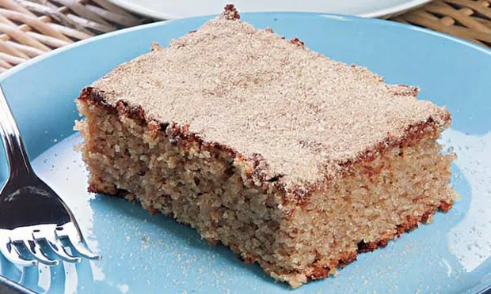

Bolo de Casca de Banana

Ingredientes
4 unidades de casca de banana
3 xícaras de chá de açúcar
1 colher de sopa de fermento em pó
3 xícaras de chá de farinha de rosca
1/2 xícara de chá de açúcar
1 xícara e 1/2 de chá de água
Modo de Preparo
Lave as bananas e descasque.
Separe 4 xícaras de casca para fazer a massa.
Bata as claras em neve e reserve, na geladeira.
Bata no liquidificador as gemas, o leite, a margarina, o açúcar e as cascas de banana.
Despeje essa mistura em uma vasilha e acrescente a farinha de rosca.
Mexa bem.
Por último, misture delicadamente as claras em neve e o fermento.
Despeje em uma assadeira untada com margarina e farinha.
Leve ao forno médio pré- aquecido por aproximadamente 40 minutos.
Queime o açúcar em uma panela e junte a água, fazendo um caramelo.
Acrescente as bananas cortadas em rodelas e o suco de limão.
Cozinhe.
Cubra o bolo ainda quente.
Dica: banana é rica em potássio.